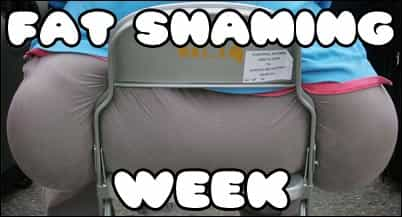
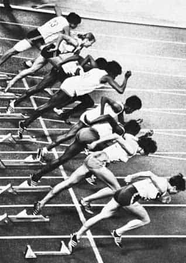

Daryush "Roosh" Valizadeh created ROK in October 2012. You can visit his blog at RooshV.com or follow him on Twitter and Facebook.



I’ve previously written about how the very concept of beauty in the Western world is being attacked. Coordinated efforts are being made to re-define beauty to accommodate the growing heft of strong, independent American women. These efforts are succeeding, because there are many fat women who are actually proud of their fat, with no immediate plan to lose the weight. Except for a handful of deviant websites like 4chan and Misc, no one is pushing back against fat acceptance.
There is no prominent politician or media figure who uses their influence to say, “Hey now, fat people are decreasing life spans and burdening our health care system.” There is no one stating the obvious that a person’s physical appearance is a reliable indicator of their character. There is no Dr. Oz or Dr. Phil stating that it’s impossible for a whale of immense proportions to be a psychologically well-balanced person. There is no male celebrity stating that he rather die than have sex with a woman over 150 pounds.
Why is this? We are allowing fat people to change the definition of beauty? Because they are consumers with money to spend and because they are citizens with votes to cast. Offending them is not prudent from a business or political standpoint. Telling them to put the goddamn bacon cheeseburger down may cause them to spend their money elsewhere or vote for the other guy. This means that fat acceptance will continue to make strides in the corporate and political sectors of life, but thankfully these two institutions don’t completely control the culture. No matter how many ads Dove makes featuring morbidly obese women in bikinis, most men will simply not find fat women attractive. No matter how many feminists tell you to stop being “sexist” for having a natural and biological preference for fit women, most men would rather jerk off with their left hand than try to find the vaginal entry point of a fat woman.
That’s where we come in. We at ROK fully understand that the reason women are so against fat shaming is because it works. Mocking someone for lazy and slothful behavior is one of the best ways to motivate them to change and appear more pleasing before our presence. If a fat woman goes to the bar with attitude, thinking she’s a great catch, but several men check her for that arrogance by calling her a grenade launcher, do you think she’ll feel comfortable the next day for her scheduled cupcake and ice cream binge?
Hurting people’s feelings is the quickest way to get them to change, as any man who has been rejected by women can tell you (we can get laid today only because we’ve adapted to being shamed and punished for our appearance and beta male behavior over the course of many years). It’s no coincidence that fat shaming and slut shaming are two big causes du jour of mustached feminists, because these two work synergistically in creating women who are not fat and not unabashedly slutty. The fact that these shaming techniques are being attacked simply confirms their immense power.
Therefore, we are proud to announce this week as Fat Shaming Week. For the next seven days, we will promote a culture of fat shaming. The brightest masculine minds are currently at work to bring you a delicious buffet of fat shaming analysis and literature. During fat shaming week, I implore you not to whine and nag about wanting a wider selection of posting matter. If you don’t like fat shaming—and we don’t see why that would be the case—come back next Monday when we return to our regular program. We have decided as a group that fat shaming is essential in creating a society of thin, beautiful women who are ashamed for being ugly. Let the fat shaming begin!

Read Next: Why Fat Women Should Be Sent To Prison